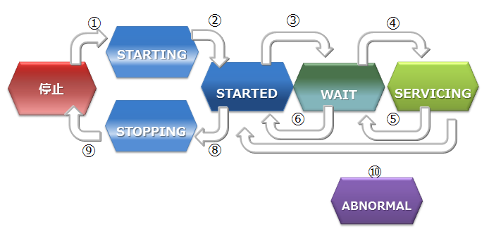

GridDB 機能リファレンス
Revision: CE-20200203
1 はじめに
1.1 本書の目的と構成
本書では、GridDBの機能について説明します。本書は、以下のような構成となっています。
- GridDBとは
- GridDBの特長やGridDBの適用例を説明します。
- GridDBの仕組み
- GridDBのクラスタ動作の仕組みについて説明します。
- GridDBのデータモデル
- GridDBのデータモデルについて説明します。
- GridDBが提供する機能
- GridDBが提供するデータ管理の機能について説明します。
- パラメータ
- GridDBの動作を制御するパラメータについて説明します。
2 GridDBとは
GridDBは、キーと複数の値からなるデータ(ロウと呼ばれる)の集合を管理する、分散NoSQL型データベースです。 データをすべてメモリに配置するインメモリデータベースとしての構成に加え、ディスク(SSDも含む)とメモリの利用を併用したハイブリッド構成も取れます。ハイブリッド構成を用いることで、小規模、小メモリシステムでも活用可能です。
GridDBはビッグデータソリューションで必要となる３つのV(Volume,Variety,Velocity)に加え、データの信頼性／可用性を備えています。また、自律的なノード監視と負荷バランシング機能により、クラスタ運用の省力化が実現できます。
2.1 GridDBの特徴
2.1.1 大容量データ(Volume)
システムの規模拡大とともに扱うデータの容量は増大し、大容量データを素早く処理するためにはシステムの拡張が必要になります。
システムの拡張のアプローチには、大きく分けてスケールアップ(垂直スケーラビリティ）とスケールアウト(水平スケーラビリティ）の２つのアプローチがあります。
スケールアップ（垂直スケーラビリティ）とは
動作するマシンへのメモリ追加、ディスクのSSD化、プロセッサの追加などの方法でシステムを増強するアプローチです。一般的に、１つ１つの処理時間を短縮してシステムを高速化するという効果があります。その反面、複数台マシンを用いたクラスタ運用ではないため、スケールアップ時には一旦ノードを停止する必要があり、障害発生時には障害回復に時間がかかるなどの欠点があります。
スケールアウト（水平スケーラビリティ）とは
システムを構成するノードの台数を増やして処理能力を向上させるアプローチです。一般的に、複数のノードを連携して動作させることになるため、メンテナンスや障害発生時でもサービスを完全に停止させる必要がない点が利点となります。その反面、ノード台数が増えるために運用管理の手間が増大するなどの欠点があります。並列度の高い処理を行なうのに向いたアーキテクチャです。
GridDBでは、動作するノードをスケールアップしてシステム増強する方法に加え、システムに新たなノードを追加し、稼働するクラスタに組み込むスケールアウトでシステムを拡張することもできます。
GridDBは、インメモリ処理データベースとしてもスケールアウトモデルで大容量化が可能です。GridDBでは、複数ノードで構成されるクラスタ内のノードにデータを分散配置します。複数ノードのメモリを１つの大きなメモリ空間として利用することで、大規模なメモリデータベースを提供できます。
また、メモリの利用だけでなく、ディスクを併用したハイブリッド構成のデータ管理も可能であるため、単体のノードで動作させた場合も、メモリサイズを超えたデータを保持して、アクセスができます。メモリサイズに制限されない大容量化も実現できます。

スケールアウトでのシステム拡張は、オンラインで行うことができます。そのため、運用中のシステムを停止することなく、システムの成長とともに増大するデータに対応できます。
スケールアウトでシステムに追加したノードには、システムの負荷に応じて適切にデータが配置されます。GridDBが負荷バランスを最適化するため、運用管理者がデータ配置を気にする必要はありません。このような運用を自動化する仕組みが組み込まれており、運用も容易です。
2.1.2 さまざまなデータ(Variety)
GridDBのデータは、Key-Valueを発展させたKey-Container型のデータモデルです。コンテナというRDBのテーブルに相当する器にデータを格納します。 （コンテナをRDBのテーブルとして考えるとわかりやすいです。）
GridDBのデータアクセスでは、Key-Valueデータベース構造のため、Keyで絞り込みができるモデルが最も高速に処理できます。管理する実体に対応して、キーとなるコンテナを用意するという設計が必要です。
コンテナには、センサ等の時々刻々発生する時間と値のペアになった大量の時系列のデータを扱うのに適したコンテナ(時系列コンテナ）に加え、位置情報などの空間データを登録し、空間固有の演算（空間の交差）を行うこともできます。配列型のデータやBLOBなどの非定型なデータにも対応しているため、さまざまなデータを扱うことができます。
時系列コンテナには、特有の圧縮機能や保持期限の切れたデータの解放機能などを提供しており、大量に発生するデータの管理に適しています。
2.1.3 高速処理(Velocity)
GridDBには、さまざまなアーキテクチャ上の工夫が組み込まれ、高速化を実現しています。
2.1.3.1 できるだけメモリ上で処理をする
全てのデータがメモリに配置されてインメモリで動作するシステムの場合、ディスクへのアクセスのオーバヘッドをあまり気にする必要がありません。しかし、メモリ上に保持できないほどの大量のデータを処理するためには、アプリケーションがアクセスするデータを局所化して、ディスクに配置されたデータへのアクセスをできるだけ少なくする必要があります。
GridDBでは、アプリケーションからのデータアクセスを局所化するために、関連のあるデータをできるだけ同じブロックに配置する機能を提供します。データにヒント情報を与えることで、ヒントに従ったデータブロックにデータを集約し、データアクセス時のメモリ内ヒット率を高め、データアクセス時間を高速化します。アプリケーションでのアクセス頻度やアクセスパターンに応じて、メモリ集約のヒントを設定することで、限られたメモリ領域を有効活用して動作させることができます（アフィニティ機能）。
2.1.3.2 オーバヘッドを減らす
データベースに対して並列にアクセスする時のロックやラッチなどによる、データベースの実行処理待ちとなる時間をできるだけ少なくするために、GridDBでは、CPUコア・スレッドごとに占有するメモリとデータベースファイルを割り当て、排他、同期処理の待ちをなくしています。
また、GridDBでは、クライアントライブラリ側で初回アクセス時にデータ配置をキャッシュすることで、クライアントとノード間は直接アクセス可能です。データ配置やクラスタの動作状況を管理するマスタノードを介さず、直接目的とするデータにアクセスできるので、マスタノードへのアクセス集中や、通信コストを大幅に削減できます。
2.1.3.3 並列に処理をする
GridDBでは、1つの巨大なデータを複数ノードに分散配置（パーティショニング）したノード間、およびノード内での並列処理と、少ないリソースで多くの要求を処理できるイベント駆動エンジンで、高速化を実現しています。
2.1.4 信頼性／可用性
クラスタ内ではデータを複製して、複数のノード上にデータ(レプリカ)を多重配置しています。レプリカの中で、マスタのデータをオーナ、複製したデータをバックアップと呼びます。クラスタを構成するいずれかのノードに障害が発生した場合でも、レプリカを使用することで処理を継続できます。ノード障害発生後のデータ再配置もシステムが自動的に行うため(自律的データ配置）、特別な運用操作は不要です。障害対象のノードに配置されていたデータはレプリカから復旧され、自動的に設定されたレプリカ数となるようにデータは再配置されます。
レプリカは、可用性の要求に応じて2重化、3重化など多重度の設定ができます。
各ノードはディスクを使用してデータ更新情報の永続化を行っています。クラスタシステムに障害が発生しても、ディスクに問題がなければ、それまで登録・更新したデータを失わずに復元することができます。
また、クライアントでもデータ配置管理情報のキャッシュを保有しているため、ノードの障害を検知すると自動的にフェイルオーバーし、レプリカを用いたデータアクセスを継続できます。
3 用語一覧
GridDBで利用する用語を一覧で解説します。
| 用語 | 意味 |
|---|---|
| ノード | GridDBでデータ管理を行う個々のサーバプロセスを指します。 |
| クラスタ | 一体となってデータ管理を行う、1つ、もしくは複数のノードの集合を指します。 |
| マスタノード | クラスタ管理処理を行うノードです。 |
| フォロワノード | クラスタに参加している、マスタノード以外のノードです。 |
| 構成ノード数 | GridDBクラスタを構成するノード数を指定します。GridDBが初回に起動する際に、クラスタが成立する閾値として用いられます。（構成ノード数のノードがクラスタに参加することでクラスタサービスが開始されます。） |
| 有効ノード数 | GridDBクラスタを構成するノードの内、クラスタに組み込まれた稼働中のノードの数です。 |
| ブロック | ブロックとは、ディスクへのデータ永続化処理（以降、チェックポイントと呼びます）のデータ単位であり、GridDBの物理的なデータ管理の最小単位です。ブロックには複数のコンテナのデータが配置されます。ブロックサイズは、GridDBの初期起動前に定義ファイル（クラスタ定義ファイル）で設定します。 |
| パーティション | コンテナを配置するデータ管理の単位です。クラスタ間でのデータ配置の最小単位であり、ノード間の負荷バランスを調整するため(リバランス）や、障害発生時のデータ多重化（レプリカ）管理のためのデータ移動や複製の単位です。 |
| パーティショングループ | 複数のパーティションをまとめたグループであり、データをディスクに永続化する際のファイルシステム上のデータファイルに相当します。1つのパーティショングループに1つのチェックポイントファイルが対応します。パーティショングループは、ノード定義ファイルの並列度(/dataStore/concurrency)の数だけ作成されます。 |
| ロウ | コンテナ(テーブル)に登録される1行のデータを指します。コンテナ(テーブル)には複数のロウが登録されます。ロウは、コンテナ(テーブル)のスキーマ定義に対応したカラムの値から構成されます。 |
| コンテナ(テーブル) | ロウの集合を管理する入れ物です。コンテナには、コレクションと時系列コンテナの２種類のデータタイプが存在します。 |
| コレクション(テーブル) | 一般の型のキーを持つロウを管理するコンテナ(テーブル)の１種です。 |
| 時系列コンテナ(時系列テーブル) | 時刻型のキーを持つロウを管理するコンテナ(テーブル)の１種です。時系列のデータを扱う専用の機能を持ちます。 |
| データベースファイル | クラスタを構成するノードの保有するデータをディスクやSSDに書き込み、永続化したファイル群です。データベースファイルは、定期的にメモリ上のデータベースが書き込まれるチェックポイントファイルと、データ更新の都度保存されるトランザクションログファイルを総称します。 |
| チェックポイントファイル | パーティショングループがディスクに書き込まれたファイルです。 ノード定義ファイルのサイクル（/checkpoint/checkpointInterval）でメモリ上の更新情報が反映されます。 |
| トランザクションログファイル | トランザクションの更新情報がログとして逐次保存されるファイルです。 |
| LSN（Log Sequence Number) | パーティションごとに割り当てられる、トランザクションでの更新時の更新ログシーケンス番号です。クラスタ構成のマスタノードは、各ノードが保持している全パーティションのLSNのうちの最大数（MAXLSN)を保持しています。 |
| レプリカ | 複数のノードにパーティションを多重化配置することを指します。レプリカには更新されるマスタデータであるオーナと参照に利用されるバックアップがあります。 |
| オーナノード | パーティション内のコンテナに対して更新操作ができるノードです。複製されたコンテナのうち、マスタとなるコンテナを記録しているノードです。 |
| バックアップノード | 複製されたコンテナのうち、バックアップのためのデータを記録しているノードです。 |
| 定義ファイル | クラスタを構成する際のパラメータファイル（gs_cluster.json：以降クラスタ定義ファイルと呼ぶ）とクラスタ内でのノードの動作やリソースを設定するパラメータファイル（gs_node.json：以降ノード定義ファイルと呼ぶ）の２つがあります。また、ユーザ定義ファイルもあります。 |
| イベントログファイル | GridDBサーバのイベントログが保管されるファイルです。エラーや警告などのメッセージが含まれます。 |
| ユーザ定義ファイル | ユーザが登録されるファイルです。初期インストールではadminが登録されています。 |
| クラスタデータベース | GridDBのクラスタシステムでアクセスできるデータベース全体を総称します。 |
| データベース | クラスタデータベースに作成される、論理的なデータ管理の単位です。クラスタデータベース内にデフォルトではpublicというデータベースが作成されています。 |
| フェイルオーバ― | 稼働中のクラスタに障害が発生した際に、バックアップノードがその機能を自動的に引き継ぎ、処理を続行する仕組みです。 |
| クライアントフェイルオーバー | 稼働中のクラスタに障害が発生した際、クライアント側のAPIで障害時のリトライ処理としてバックアップノードに自動的に接続し直し、処理を続行する仕組みです。 |
| データアフィニティ | 関連の強いコンテナのデータを同じブロックに配置し、データアクセスの局所化を図ることでメモリヒット率を高めるための機能です。 |
| ノードアフィニティ | 関連の強いコンテナを同じノードに配置し、データアクセス時のネットワーク負荷を減少させるための機能です。 |
4 GridDBの仕組み
GridDBのクラスタ動作のしくみやデータモデルについて説明します。
4.1 クラスタの構成
GridDBは複数ノードで構成されるクラスタで動作します。アプリケーションシステムからデータベースにアクセスするにはノードが起動されており、かつクラスタが構成(クラスタサービスが実行)されている必要があります。
クラスタは、ユーザが指定した構成ノード数のノードがクラスタへ参加することで構成され、クラスタサービスが開始されます。構成ノード数のノードがクラスタに参加するまでクラスタサービスは開始されず、アプリケーションからはアクセスできません。
ノード1台で動作させる場合にも、クラスタを構成する必要があります。この場合構成ノード数を1台でクラスタを構成することになります。ノード1台で動作させる構成をシングル構成と呼びます。
ネットワーク上にあるGridDBの多数のノードを用いて、正しく（意図したノードを用いて）クラスタが構成できるよう、クラスタ名を使って複数のクラスタを区別します。これにより、同じネットワーク上に複数のGridDBクラスタが構成できます。クラスタは、クラスタ名、構成ノード数、接続方式の設定が等しいノードで構成されます。クラスタ名は、クラスタを構成するノード毎に保有するクラスタ定義ファイルに設定するとともに、クラスタ構成する際のパラメータでも指定します。
マルチキャストを用いてクラスタを構成する方式をマルチキャスト方式と呼びます。クラスタ構成方式については、クラスタ構成方式を参照してください。
以下にクラスタ構成の操作の流れを示します。
ノードの起動、クラスタの構成には、gs_startnode/gs_joinclusterコマンドを用います。また、OS起動と同時にノードを起動し、クラスタを構成するサービス制御機能もあります。
クラスタを構成するには、クラスタに参加させるノードの数（構成ノード数）とクラスタ名をすべての参加ノードで一致させる必要があります。
クラスタサービスは、クラスタでの運用開始後に構成するノードに障害がありクラスタからノードが切り離された場合でも、過半数のノードが参加している限りサービスは継続します。
過半数以上のノードさえ動作していればクラスタ運用は継続できるので、クラスタ運用中にメンテナンス等のために、オンラインでノード切り離したり、メンテナンス完了後にノードを組込む操作ができます。さらには、システムを増強するためにノードを追加することもオンラインでできます。
クラスタ内部の通信を行うネットワークとクライアント通信専用のネットワークを分離させることが可能です。
4.1.1 ノードのステータス
ノードには、ノードの状態を表す複数の種類のステータスがあります。ユーザのコマンド実行やノードの内部処理によってステータスが遷移します。クラスタのステータスは、クラスタに属する複数のノードのノードステータスによって決まります。
ノードステータスの種類と遷移、確認方法を説明します。
ノードステータスの種類
ノードステータス 説明 STOP ノードでGridDBサーバが起動されていない状態です。 STARTING ノードでGridDBサーバが起動処理中の状態です。前回の運転状態に応じて、データベースのリカバリ処理などの起動時の処理が行われます。クライアントからアクセスできるのは、gs_statコマンドでのシステムの状態確認のみです。アプリケーションからのアクセスはできません。 STARTED ノードでGridDBサーバが起動されている状態です。ただし、クラスタには参加していないため、引き続きアプリケーションからのアクセスはできません。クラスタを構成するには、gs_joinclusterのクラスタ操作コマンドでクラスタへの参加を指示します。 WAIT クラスタ構成待ちの状態です。ノードはクラスタへの参加を通知しているが、構成ノード数のノードが足りておらず、ノード数が構成ノード数になるまで待ち状態となります。また、クラスタを構成するノードが過半数以下になり、クラスタのサービスが停止した際のノード状態もWAIT状態になります。 SERVICING クラスタが構成されており、アプリケーションからのアクセスが可能な状態です。ただし、ノード停止時の障害後の再起動などでパーティションのクラスタ間での同期処理が発生した場合、アクセスが遅延することがあります。 STOPPING ノードを停止指示後、停止するまでの中間ステータスです。 ABNORMAL SERVICING状態もしくは、状態遷移の途中でノードがエラーを検出した際のステータスです。ABNORMAL状態となったノードは、自動的にクラスタから切り離されます。システムの動作情報を採取してから、ABNORMAL状態のノードを強制停止・再起動する必要があります。再起動することで、リカバリ処理が自動的に行われます。 ノードステータスの遷移
 ノードステータス ステータス遷移 状態遷移事象 説明 ① コマンド実行 ノード起動(gs_startnodeコマンドのコマンド実行) ② システム リカバリ処理やデータベースファイルのロードが完了すると、状態は自動遷移 ③ コマンド実行 クラスタ参加(gs_joincluster/gs_appendclusterコマンドなどのコマンド実行) ④ システム 構成ノード数のノードがクラスタに参加すると状態は自動遷移 ⑤ システム クラスタを構成する他のノードが障害等によりサービスから切り離され、構成ノード数が設定値の過半数を下回った時に、状態が自動遷移 ⑥ コマンド実行 ノードをクラスタから切り離す(gs_leaveclusterコマンドのコマンド実行) ⑦ コマンド実行 ノードをクラスタから切り離す(gs_leavecluster/gs_stopclusterコマンドのコマンド実行) ⑧ コマンド実行 ノード停止(gs_stopnodeコマンドのコマンド実行) ⑨ システム 終了処理が完了次第、サーバプロセスを停止 ⑩ システム システム障害により切り離された状態。この状態では一度ノードを強制的に停止する必要がある。 ノードステータスの確認方法
ノードステータスは、ノードの稼働状況とノードの役割の2つの状態の組合せによって決まります。ノードの稼働状況とノードの役割は、gs_statコマンドを実行した結果のjson形式のデータから確認できます。（ノードの稼働状況：/cluster/nodeStatusの値、ノードの役割：/cluster/clusterStatusの値)
ノードステータスと、ノードの稼働状況とノードの役割の2つの状態の組合せを以下に示します。
ノードステータス ノードの稼働状況
(/cluster/nodeStatus)ノードの役割
(/cluster/clusterStatus)STOP －(gs_statの接続エラー) －(gs_statの接続エラー) STARTING INACTIVE SUB_CLUSTER STARTED INACTIVE SUB_CLUSTER WAIT ACTIVE SUB_CLUSTER SERVICING ACTIVE MASTERまたはFOLLOWER STOPPING NORMAL_SHUTDOWN SUB_CLUSTER ABNORMAL ABNORMAL SUB_CLUSTER ノードの稼働状況
ノードの稼働状況を表します。gs_statコマンドの/cluster/nodeStatusの値で確認できます。
ノードの稼働状況 説明 ACTIVE アクティブ状態 ACTIVATING アクティブ状態に遷移中 INACTIVE 非アクティブ状態 DEACTIVATING 非アクティブ状態に遷移中 NORMAL_SHUTDOWN シャットダウン処理中 ABNORMAL 異常状態 ノードの役割
ノードの役割を表します。gs_statコマンドの/cluster/clusterStatusの値で確認できます。
ノードには「マスタ」と「フォロワ」という二つの役割があります。クラスタが開始する時には、クラスタを構成するノードのひとつが必ず「マスタ」になります。マスタはクラスタ全体の管理を行います。マスタ以外のノードはすべて「フォロワ」になります。フォロワは、マスタからの指示に基づいて同期などのクラスタ処理を行います。
ノードの役割 説明 MASTER マスタ FOLLOWER フォロワ SUB_CLUSTER/SUB_MASTER 役割未定
4.1.2 クラスタのステータス
クラスタの稼働ステータスは各ノードの状態で決まり、そのステータスには稼働／中断／停止の3つの種類があります。
クラスタのサービスは、システムの初回構築時においては、ユーザが指定したクラスタ構成するノード数（構成ノード数）のノードがすべてクラスタに参加した時点で開始されます。
初回のクラスタ構築時、クラスタを構成するノードがすべてクラスタに組み入れられておらず、クラスタ構成待ちの状態が【INIT_WAIT】状態です。構成ノード数のノードがクラスタに参加完了した時点で状態は自動遷移し稼働状態となります。
稼働状態には【STABLE】と【UNSTABLE】の2つの状態があります。
- 【STABLE】状態
- 構成ノード数で指定したノードの数でクラスタが構成されており、サービスが提供できている安定した状態。
- 【UNSTABLE】状態
- 構成ノード数に満たない状態で、かつ、構成ノード数の過半数が稼働している状態
- 構成ノード数の過半数が稼働している限り、クラスタのサービスは継続します。
メンテナンスなどでノードをクラスタより切り離しても、構成ノード数の過半数が動作している限りクラスタは【UNSTABLE】状態で運用できます。
クラスタを構成するノードが、構成ノード数の半数以下となった場合、スプリットブレイン発生を防ぐためにクラスタは自動的にサービスを中断します。クラスタのステータスは【WAIT】状態となります。
スプリットブレインとは、
複数のノードを相互接続して1台のサーバのように動作させる密結合クラスタシステムにおいて、ハードウェアやネットワークの障害によりシステムが分断されたことを契機に、同じ処理を行なう複数のクラスタシステムが同時にサービスを提供してしまう動作をいいます。この状態で運用を継続した場合、複数のクラスタでレプリカとして保有するデータをマスタデータとして動作してしまい、データの一貫性が取れない状態となってしまいます。
【WAIT】状態からクラスタサービスを再開するには、エラーの回復したノードや新規のノードをノード追加操作でクラスタへ追加していきます。 再び構成ノード数のノードがクラスタに参加完了した時点で状態は【STABLE】状態となり、サービスが再開されます。
ノードの障害等でクラスタを構成するノード数が半数以下となり、クラスタのサービスが中断した場合でも、ノード追加操作でエラーの回復したノードや新規のノードをクラスタへ追加していき過半数のノードがクラスタに参加した時点で自動的にクラスタのサービスは再開されます。
STABLE状態はgs_statの示すjsonのパラメータである、/cluster/activeCountと/cluster/designatedCountの値が等しい状態です。
$ gs_stat -u admin/admin
{
"checkpoint": {
"archiveLog": 0,
：
：
},
"cluster": {
"activeCount":4, ★ クラスタ内で稼働中のノード
"clusterName": "test-cluster",
"clusterStatus": "MASTER",
"designatedCount": 4, ★ 構成ノード数
"loadBalancer": "ACTIVE",
"master": {
"address": "192.168.0.1",
"port": 10040
},
"nodeList": [ ★ クラスタを構成するマシンリスト
{
"address": "192.168.0.1",
"port": 10040
},
{
"address": "192.168.0.2",
"port": 10040
},
{
"address": "192.168.0.3",
"port": 10040
},
{
"address": "192.168.0.4",
"port": 10040
},
],
：
：
4.1.3 パーティションのステータス
パーティションステータスは、クラスタ上のパーティション全体の状態を表します。クラスタステータスが稼働状態の時に、パーティションにアクセスできる状態か、パーティションに偏りが無いかなどを表すステータスです。
| パーティションステータス | 説明 |
|---|---|
| NORMAL | すべてのパーティションがデータ配置目標と同一の正常な状態 |
| NOT_BALANCE | レプリカロスやオーナロスは発生していないが、パーティションの配置が偏っている状態 |
| REPLICA_LOSS | レプリカのデータが欠損しているパーティションが存在する状態 （該当パーティションの可用性が落ちている・ノード離脱できない） |
| OWNER_LOSS | オーナのデータが欠損しているパーティションが存在する状態 （該当パーティションのデータにはアクセスできない） |
| INITIAL | クラスタ構成に参加していない初期状態 |
パーティションステータスは、マスタノードへのgs_statコマンドの実行で確認できます。（/cluster/partitionStatusの値）
$ gs_stat -u admin/admin
{
：
：
"cluster": {
：
"nodeStatus": "ACTIVE",
"notificationMode": "MULTICAST",
"partitionStatus": "NORMAL",
：
[メモ]
- マスタノード以外の/cluster/partitionStatusの値は、正しくない場合があります。必ずマスタノードの値を確認してください。
4.2 クラスタ構成方式
クラスタは、ネットワーク上に存在するノード同士がお互いを認識することで構成されます。 ノードは、認識した他のノードのアドレスをリストとして持ちます。
GridDBは、アドレスリストを構成する方法が異なる3つのクラスタ構成方式を提供します。環境や利用ケースによってクラスタ構成方式を使い分けることができます。クラスタ構成方式によって、クライアントや運用ツールの接続方式も異なります。
クラスタ構成方式には、マルチキャスト方式と固定リスト方式とプロバイダ方式の3つがあります。推奨はマルチキャスト方式です。
固定リスト方式かプロバイダ方式を用いることで、マルチキャストが利用不可能な環境でのクラスタ構成、クライアント接続が可能になります。
- マルチキャスト方式
- マルチキャストでノードのディスカバリを行い、アドレスリストを自動構成します。
- 固定リスト方式
- クラスタ定義ファイルに固定のアドレスリストを指定して起動することで、そのリストを利用します。
- プロバイダ方式
- アドレスプロバイダが提供するアドレスリストを取得して利用します。
- アドレスプロバイダはWebサービスとして構成するか、静的コンテンツとして構成することができます。
クラスタ構成方式の比較は以下のとおりです。
| 項目 | マルチキャスト方式(推奨) | 固定リスト方式 | プロバイダ方式 |
|---|---|---|---|
| 設定 | ・マルチキャストアドレス、ポート | ・全ノードのIPアドレス:ポートのリスト | ・プロバイダURL |
| 利用ケース | ・マルチキャストが利用できる | ・マルチキャストが利用できない ・正確にシステム規模の見積りが行える |
・マルチキャストが利用できない ・システム規模が見積れない |
| クラスタ動作 | ・一定時間間隔でノードの自動ディスカバリを行う。 | ・全ノードに同一のアドレスリストを設定する ・ノード起動時に1度だけそのリストを読み込む |
・アドレスプロバイダから一定時間間隔でアドレスリストを取得 |
| メリット | ・ノード追加のためのクラスタ再起動不要 | ・リストの整合性チェックが行われるため、間違いが無い | ・ノード追加のためのクラスタ再起動不要 |
| デメリット | ・クライアント接続にマルチキャストを要する | ・ノード追加にクラスタ再起動が必要 ・アプリ側の接続設定の更新も必要 |
・アドレスプロバイダの可用性確保が必要 |
4.2.1 クラスタ構成方式の設定
マルチキャスト方式が利用できない環境では、固定リスト方式またはプロバイダ方式でクラスタを構成します。 以下では、固定リスト方式とプロバイダ方式それぞれのネットワーク設定について説明します。
4.2.1.1 固定リスト方式
固定のアドレスリストを与えてノードを起動することで、そのリストを利用してクラスタを構成します。
固定リスト方式でクラスタを構成する場合は、クラスタ定義ファイルのパラメータを設定します。
クラスタ定義ファイル
| パラメータ | データ型 | 意味 |
|---|---|---|
| /cluster/notificationMember | string | クラスタ構成方式を固定リスト方式にする際に、アドレスリストを指定します。 |
クラスタ定義ファイルの設定例は以下のとおりです。
{
:
:
"cluster":{
"clusterName":"yourClusterName",
"replicationNum":2,
"heartbeatInterval":"5s",
"loadbalanceCheckInterval":"180s",
"notificationMember": [
{
"cluster": {"address":"172.17.0.44", "port":10010},
"sync": {"address":"172.17.0.44", "port":10020},
"system": {"address":"172.17.0.44", "port":10040},
"transaction": {"address":"172.17.0.44", "port":10001},
"sql": {"address":"172.17.0.44", "port":20001}
},
{
"cluster": {"address":"172.17.0.45", "port":10010},
"sync": {"address":"172.17.0.45", "port":10020},
"system": {"address":"172.17.0.45", "port":10040},
"transaction": {"address":"172.17.0.45", "port":10001},
"sql": {"address":"172.17.0.45", "port":20001}
},
{
"cluster": {"address":"172.17.0.46", "port":10010},
"sync": {"address":"172.17.0.46", "port":10020},
"system": {"address":"172.17.0.46", "port":10040},
"transaction": {"address":"172.17.0.46", "port":10001},
"sql": {"address":"172.17.0.46", "port":20001}
}
]
},
:
:
}
4.2.1.2 プロバイダ方式
アドレスプロバイダが提供するアドレスリストを取得してクラスタ構成を行います。
プロバイダ方式でクラスタを構成する場合は、クラスタ定義ファイルのパラメータを設定します。
クラスタ定義ファイル
| パラメータ | データ型 | 意味 |
|---|---|---|
| /cluster/notificationProvider/url | string | クラスタ構成方式をプロバイダ方式にする際に、アドレスプロバイダのURLを指定します。 |
| /cluster/notificationProvider/updateInterval | string | アドレスプロバイダからリストを取得する間隔を指定します。1s以上、231s未満の値を指定します。 |
クラスタ定義ファイルの設定例は以下のとおりです。
{
:
:
"cluster":{
"clusterName":"yourClusterName",
"replicationNum":2,
"heartbeatInterval":"5s",
"loadbalanceCheckInterval":"180s",
"notificationProvider":{
"url":"http://example.com/notification/provider",
"updateInterval":"30s"
}
},
:
:
}
アドレスプロバイダはWebサービスとして構成するか、静的コンテンツとして構成することができます。 アドレスプロバイダは以下の仕様を満たす必要があります。
- GETメソッドに対応。
- URLにアクセスすると、そのURLが書かれたクラスタ定義ファイルを持つクラスタのノードのアドレスリストをレスポンスとして返す。
- レスポンスボディ：固定リスト方式において指定するノードリストの内容と同等のJSON
- レスポンスヘッダ：Content-Type:application/jsonを含む
アドレスプロバイダからのレスポンスの例は以下のとおりです。
$ curl http://example.com/notification/provider
[
{
"cluster": {"address":"172.17.0.44", "port":10010},
"sync": {"address":"172.17.0.44", "port":10020},
"system": {"address":"172.17.0.44", "port":10040},
"transaction": {"address":"172.17.0.44", "port":10001},
"sql": {"address":"172.17.0.44", "port":20001}
},
{
"cluster": {"address":"172.17.0.45", "port":10010},
"sync": {"address":"172.17.0.45", "port":10020},
"system": {"address":"172.17.0.45", "port":10040},
"transaction": {"address":"172.17.0.45", "port":10001},
"sql": {"address":"172.17.0.45", "port":20001}
},
{
"cluster": {"address":"172.17.0.46", "port":10010},
"sync": {"address":"172.17.0.46", "port":10020},
"system": {"address":"172.17.0.46", "port":10040},
"transaction": {"address":"172.17.0.46", "port":10001},
"sql": {"address":"172.17.0.46", "port":20001}
}
]
【メモ】
- 各アドレスおよびポートはノード定義ファイルのserviceAddressおよびservicePortをモジュール(cluster,syncなど)ごとに指定します。
- sqlの項目はGridDB Advanced Editionのみで必要となります。
- クラスタ定義ファイルの/cluster/notificationAddress、/cluster/notificationMember、/cluster/notificationProviderは、使用するクラスタ構成方式に合わせていずれか1つを設定してください。
5 データモデル
GridDBは、Key-Valueに似た独自のKey-Container型データモデルです。以下の特徴があります。
- Key-Valueをグループ化するコンテナというRDBのテーブルに似た概念を導入
- コンテナに対してデータ型を定義するスキーマ設定が可能。カラムにインデックスを設定可能。
- コンテナ内のロウ単位でトランザクション操作が可能。また、コンテナ単位でACIDを保証します。
GridDBのデータは、ブロック、コンテナ、テーブル、ロウ、パーティション、パーティショングループという単位でデータ管理されています。
ブロック
ブロックとは、ディスクへのデータ永続化処理（以降、チェックポイントと呼びます）のデータ単位であり、GridDBの物理的なデータ管理の最小単位です。ブロックには複数のコンテナのデータが配置されます。ブロックサイズは、GridDBの初期起動前に定義ファイル（クラスタ定義ファイル）で設定します。
GridDBは、システムの初期起動とともにデータベースファイルが作成されるため、初期起動以降ブロックサイズの変更はできません。
コンテナ（テーブル）
利用者とのI/Fとなるデータ構造です。 複数のブロックで構成されます。 コンテナ（テーブル）には、コレクション（テーブル）と時系列コンテナ（時系列テーブル）の２種類のデータタイプが存在します。
アプリケーションでデータを登録する前には、必ずコンテナ（テーブル）を作成しておく必要があります。
ロウ
ロウは、コンテナやテーブルに登録される1行のデータを指します。コンテナやテーブルには複数のロウが登録されますが、データは同じブロックに配置されるわけではありません。登録・更新されるタイミングに応じて、パーティション内の適切なブロックに配置されます。
ロウは複数のデータ型のカラムから構成されます。
パーティション
パーティションは、1つ以上のコンテナやテーブルを含むデータ管理の単位です。
パーティションはクラスタ間でのデータ配置の単位であり、ノード間の負荷バランスを調整するためのデータ移動や、障害発生に備えたデータ多重化（レプリカ）管理のための単位です。データのレプリカはパーティション単位にクラスタを構成するノードに配置されます。
パーティション内のコンテナに対して更新操作ができるノードはオーナノードと呼ばれ、１つのパーティションに対して１つのノードが割り当てられます。オーナノード以外でレプリカを保持するノードは、バックアップノードとなります。パーティションには、レプリカの数の設定値に応じてマスタデータと複数のバックアップデータがあります。
コンテナとパーティションの関連は恒久的なもので、コンテナ作成時に、所属するパーティションが決定した後は変わりません。パーティションとノードの関連は一時的なもので、自律的データ配置によってパーティションが別のノード上に移動する場合があります。
パーティショングループ
複数のパーティションをグルーピングしてまとめた単位をパーティショングループと呼びます。
パーティショングループの保持するデータがOSのディスクに保存される物理的なデータベースファイルとなります。パーティショングループは、ノードで実行するデータベース処理スレッドの並列度に応じた数で作成されます。
5.1 コンテナ
GridDBにデータを登録し、検索するには、データを格納するコンテナ(テーブル)を作成する必要があります。
コンテナ(テーブル)もデータベースと同様の命名規則があります。
- 指定可能な文字列は、英数字およびアンダースコア_、ハイフン-、ドット.、スラッシュ/、イコール=です。ただし、先頭文字に数字は指定できません。
- 命名時の大文字・小文字は保持されますが、大文字小文字を同一視した場合に同一名となるコンテナ(テーブル)は作成できません。
5.1.1 種別
コンテナ(テーブル)には、2つのデータタイプがあります。時々刻々発生するデータを発生した時刻とともに管理するのに適したデータタイプである 時系列コンテナ(時系列テーブル) とさまざまなデータを管理する コレクション(テーブル) です。
5.1.2 データ型
コンテナ(テーブル)にはスキーマを設定できます。登録できるデータ型には、基本的なデータ型である 基本型 と 配列型 があります。
5.1.2.1 基本型
登録できる基本型のデータを説明します。基本型とは、他の型の組み合わせで表現できない、基本的な型です。
| データ型 | 説明 |
|---|---|
| BOOL型 | 真または偽のいずれかの値 |
| STRING型 | Unicodeコードポイントを文字とする、任意個数の文字の列より構成 |
| BYTE型 | -27から27-1 (8ビット)の整数値 |
| SHORT型 | -215から215-1 (16ビット)の整数値 |
| INTEGER型 | -231から231-1 (32ビット)の整数値 |
| LONG型 | -263から263-1 (64ビット) の整数値 |
| FLOAT型 | IEEE754で定められた単精度型(32ビット)浮動小数点数 |
| DOUBLE型 | IEEE754で定められた倍精度型(64ビット)浮動小数点数 |
| TIMESTAMP型 | 年月日ならびに時分秒からなる時刻を表す型。データベースに保持されるデータ形式はUTCで、精度はミリ秒 |
| GEOMETRY型 | 空間構造を表すためのデータ型 |
| BLOB型 | 画像や音声などのバイナリデータのためのデータ型 |
STRING型､GEOMETRY型、BLOB型は管理できるデータのサイズに以下の制限があります。制限値は、GridDBの定義ファイル（gs_node.json）のデータベースの入出力単位であるブロックサイズに応じて値が異なります。
| 型 | ブロックサイズ(64KB) | ブロックサイズ (1MB～32MB) |
|---|---|---|
| STRING型 | 最大31KB (UTF-8エンコード相当) | 最大128KB (UTF-8エンコード相当) |
| GEOMETRY型 | 最大31KB (内部格納形式相当) | 最大128KB (内部格納形式相当) |
| BLOB型 | 最大1GB - 1Byte | 最大1GB - 1Byte |
GEOMETRY型(空間型)
GEOMETRY型（空間型）のデータは地図情報システムなどでよく利用されています。空間型のデータは、NoSQLインターフェースでのみ使用できます。NewSQLインターフェースでは未サポートです。
GEOMETRY型のデータは、WKT（Well-known text）を用いて記述します。WKTは、地理空間に関する情報の標準化などを推進している非営利団体OGC(Open Geospatial Consortium)にて策定されています。GridDBでは、コンテナのカラムをGEOMETRY型に設定することで、WKTで記述された空間情報をカラムに格納できます。
GEOMETRY型では以下のWKT形式をサポートします。
- POINT
- 2次元または3次元の座標により生成される点。
- 記述例： POINT(0 10 10)
- LINESTRING
- 2つ以上の点により表現される、2次元または3次元空間上の直線の集合。
- 記述例： LINESTRING(0 10 10, 10 10 10, 10 10 0)
- POLYGON
- 直線の集合により表現される、2次元または3次元空間上の閉じた領域。POLYGONの頂点は反時計回りに指定します。POLYGON内に島をつくる場合、内部の点は時計回りで指定します。
- 記述例： POLYGON((0 0,10 0,10 10,0 10,0 0))、POLYGON ((35 10, 45 45, 15 40, 10 20, 35 10),(20 30, 35 35, 30 20, 20 30))
- POLYHEDRALSURFACE
- 2次元または3次元の座標により生成される点
- 記述例： POLYHEDRALSURFACE (((0 0 0, 0 1 0, 1 1 0, 1 0 0, 0 0 0)), ((0 0 0, 0 1 0, 0 1 1, 0 0 1, 0 0 0)),((0 0 0, 1 0 0, 1 0 1, 0 0 1, 0 0 0)), ((1 1 1, 1 0 1, 0 0 1, 0 1 1, 1 1 1)),((1 1 1, 1 0 1, 1 0 0, 1 1 0, 1 1 1)),((1 1 1, 1 1 0, 0 1 0, 0 1 1, 1 1 1)) )
- QUADRATICSURFACE
- 定義式f(X) = <AX, X> + BX + cにより表現される、3次元空間上の2次曲面。
ただし、空間構造QUADRATICSURFACEはコンテナに登録することはできず、検索条件としてのみ使用できます。
GEOMETRY型を利用した演算は、APIやTQLで実行できます。
TQLでは2次元、3次元の空間を定義する空間生成関数と空間型データ間での演算の関数を提供します。TQLではコンテナ内のGEOMETRY型のカラムと指定した空間データで演算を行いその結果を以下のようにして得ることができます。
SELECT * WHERE ST_MBRIntersects(geom, ST_GeomFromText('POLYGON((0 0,10 0,10 10,0 10,0 0))'))
5.1.2.2 複合型
コンテナに登録できる、基本型の組み合わせで構成される型を定義します。 現バージョンでは配列型のみです。
配列型
値の列を表します。基本型のデータの内、GEOMETRY型とBLOB型を除く基本型を配列型として、データを保持することができます。配列で保持できるデータ量の制限は、データベースのブロックサイズに応じて値が異なります。
型 ブロックサイズ(64KB) ブロックサイズ (1MB～32MB) 配列数 4000 65000
【メモ】
配列型カラムでは、TQLでの操作に以下の制約があります。
配列型カラムのi番目の値の比較はできますが、全要素に関する演算（集計演算）はできません。
（例）columnAが配列型で定義されたとした場合
select * where ELEMENT(0, columnA) > 0 のような配列内の要素を指定した比較はできます。ただし、ELEMENTの"0"の部分に変数は指定できません。
select SUM(columnA) のような集計計算はできません。
5.1.3 主キー
コンテナ(テーブル)には、主キーを設定できます。主キーによって、コンテナ(テーブル)のロウの一意性を保障します。また主キーを設定したカラムには、NULL値を許容しません。
主キーは、コンテナではROWKEY(ロウキー)、テーブルではPRIMARY KEY(プライマリキー)と呼びます。
- 時系列コンテナ（時系列テーブル）の場合
- ROWKEY(PRIMARY KEY)は先頭カラムに設定できます。（GridDBではカラムを0番から数えるため、カラム番号0に設定します。）
- ROWKEY(PRIMARY KEY)は、TIMESTAMP型です。
- 指定は必須です。
- コレクション(テーブル)の場合
- ROWKEY(PRIMARY KEY)は先頭カラムより連続した複数のカラムに設定できます。ロウキーを複数のカラムに設定した場合は、複合ロウキーと呼びます。設定できるカラム数の上限は16個です。
- ROWKEY(PRIMARY KEY)は、STRING、INTEGER、LONG、TIMESTAMPのいずれかの型のカラムです。
- 指定は必須ではありません。
ROWKEY(PRIMARY KEY)に設定したカラムには、カラムの型に応じてあらかじめ既定された、デフォルトの索引が設定されます。
GridDBの現バージョンでは、ROWKEY(PRIMARY KEY)に指定できるSTRING、INTEGER、LONG、TIMESTAMPのすべての型のデフォルトの索引はTREE索引です。
6 データベース機能
6.1 リソースの管理
GridDBのクラスタを構成するリソースには、メモリ上のデータベースのほかにディスク上に永続化されるリソースがあります。 永続化リソースには、以下のものがあります。
データベースファイル
クラスタを構成するノードの保有するデータをディスクやSSDに書き込み、永続化したファイル群です。データベースファイルは、定期的にメモリ上のデータベースが書き込まれるチェックポイントファイルと、データ更新の都度保存されるトランザクションログファイルを総称します。
チェックポイントファイル
パーティショングループがディスクに永続化されたファイルです。ノード定義ファイルのサイクル（/checkpoint/checkpointInterval）でメモリ上の更新情報が反映されます。 ファイルのサイズはデータ容量に応じて拡張されます。一度拡張されたデータファイルのサイズは、コンテナやロウなどのデータを削除しても減少しません。なお、データ削除後の空き領域は再利用されます。チェックポイントファイルは複数に分割して配置することも可能です。
トランザクションログファイル
トランザクションの更新情報がログとしてシーケンシャルに保存されるファイルです。
定義ファイル
クラスタを構成する際のパラメータファイル（gs_cluster.json：以降、クラスタ定義ファイルと呼ぶ）と、クラスタ内でのノードの動作やリソースを設定するパラメータファイル（gs_node.json：以降、ノード定義ファイルと呼ぶ）の２つがあります。また、ユーザ定義ファイルもあります。
イベントログファイル
GridDBサーバのイベントログが保存されます。イベントログにはエラーや警告などのメッセージが含まれます。
6.2 データアクセス機能
GridDBのデータにアクセスするには、NoSQLインターフェースもしくはNewSQLインターフェース(GridDB AEのみ)を用いてアプリケーションを開発する必要があります。データアクセスでは、コンテナやテーブルがクラスタデータベースのどこに配置されているかの位置情報を意識する必要はなく、GridDBのクラスタデータベースに接続するだけでアクセスができます。コンテナがクラスタを構成するどのノードに配置されているのかをアプリケーションシステムが意識する必要はありません。
GridDBのAPIでは、クラスタデータベースへの初期接続時に、ノード情報（パーティション）とともにコンテナの配置ヒント情報をクライアント側に保持（キャッシュ）します。
アプリケーションが利用するコンテナが切り替わる度に、配置されているノードを探す処理のためクラスタにアクセスする必要はなく、コンテナを保持するノードに直に接続して処理をするため、通信のオーバヘッドを最小限としています。
GridDBではリバランス処理により、コンテナ配置は動的に変わりますが、クライアントキャッシュは定期的に更新されるため、コンテナの位置は透過です。タイミングによってクライアントからのアクセスでノードがミスヒットした時でも、自動的に再配置情報を取得して処理を継続します。
6.2.1 TQL
データベースのアクセス言語として、TQLをサポートしています。
TQLとは
簡易版SQLとして、コンテナを単位とした検索、集計演算などの機能をサポートします。TQLはNoSQLインターフェースから利用します。
TQLは、小規模なコンテナに対して少量ヒットするような検索に適しています。データ量・ヒット件数が少ない場合には、SQLより低いレイテンシで検索できることが特徴です。ヒット件数を少量にする手段の一つとして、TQL構文のLIMIT節の指定があります。
6.2.2 複数コンテナへの一括処理機能
GridDBが提供するNoSQL I/Fでは、時々刻々発生するイベント情報を高速に処理するためのインターフェースを用意しています。
大量に発生するイベントを発生の都度データベースサーバに送信していると、ネットワークへの負荷が高くなりシステムのスループットがあがりません。通信回線帯域が狭い場合特に顕著な影響がでます。NoSQL I/Fでは複数のコンテナに対する複数のロウの登録や、複数のコンテナへの複数の問い合わせ(TQL)を1リクエストで処理するためのマルチ処理が用意されています。頻繁にデータベースサーバにアクセスしないため、システム全体のスループットがあがります。
以下に例を挙げます。
マルチプット(multiput)
複数のセンサのイベント情報をデータベースに登録する処理として、センサ名毎にコンテナを用意します。センサ名とセンサの時系列イベントのロウ配列を作り、複数のセンサ分まとめたリスト(Map)を作成します。このリストデータを1回のAPI呼び出しでGridDBのデータベースに登録します。
マルチプットのAPIでは、複数クラスタからなるGridDBのノードに対して、１個以上のコンテナへの登録要求をまとめて行うことで通信処理を効率化します。また、マルチ登録処理では、トランザクション実行時のMVCCは行わず、高速に処理します。
マルチプットでは、トランザクションのコミットは、autocommitとなります。1件単位にデータが確定されます。
マルチクエリ(fetchAll)
- センサのイベント情報を集計する処理などで、コンテナへのクエリ問い合わせを複数実行するのではなく、１つの問い合わせで実行することができます。たとえば、センサから取得したデータの一日の最大値、最小値、平均値などの集計結果の取得や、最大値や最小値をもつロウ集合や特定の条件に合致するロウ集合といったロウ集合のデータ取得を最適化します。
マルチゲット(multiget)
センサのイベント情報を取得する処理などで複数機器のRowkeyを指定した一括データ取得ができます。 RowKeyPredicateオブジェクトにデータ取得の条件を設定し、複数の機器のデータを一括で取得します。
RowKeyPredicateオブジェクトでは以下の2形式のいずれかで取得条件を設定します。
- 取得範囲の指定
- 指定した個別の値
6.3 索引機能
コンテナ(テーブル)のカラムに対し索引を作成することで、条件付き検索が高速に処理できます。
索引タイプにはハッシュ索引(HASH)、ツリー索引(TREE)、空間索引(SPATIAL)の3種類があります。 ハッシュ索引は、コンテナ内のクエリでの検索時の等価検索で利用します。ツリー索引は、等価検索のほかに、範囲（より大きい/等しい、より小さい/等しいなど）を含む参照に利用します。
設定できる索引はコンテナ(テーブル)のタイプやカラムのデータ型に応じて異なります。
- ハッシュ索引（HASH）
- 等価検索を高速に行えますが、ロウをシーケンシャル（逐次的）に読み込んでいくような検索には向いていません。
- コレクションにおける次に示す型のカラムに対して設定できます。時系列コンテナ、テーブル、時系列テーブルには設定できません。
- STRING
- BOOL
- BYTE
- SHORT
- INTEGER
- LONG
- FLOAT
- DOUBLE
- TIMESTAMP
- ツリー索引（TREE）
- 等価検索のほかに、範囲（より大きい/等しい、より小さい/等しいなど）を含む参照に利用します。
- 時系列コンテナ(時系列コレクション)のROWKEY(PRIMARY KEY)に対応するカラムを除く、任意種別のコンテナ（テーブル）における次に示す型のカラムに対して設定できます。
- STRING
- BOOL
- BYTE
- SHORT
- INTEGER
- LONG
- FLOAT
- DOUBLE
- TIMESTAMP
- ツリー索引のみ、複数のカラムを指定した索引を作成できます。これを複合索引と呼びます。1つの複合索引に指定できるカラム数の上限は16個で、同じカラムを複数回指定することはできません。
- 空間索引（SPATIAL）
- コレクションにおけるGEOMETRY型カラムに対してのみ設定できます。空間検索を高速に行う場合に指定します。
コンテナに作成できる索引の数に制限はありませんが、索引の作成は慎重に設計する必要があります。索引は、設定されたコンテナのロウに対して挿入、更新、または削除の各操作が実行されると更新されます。したがって、頻繁に更新されるロウのカラムに多数の索引を作成すると、挿入、更新、または削除の各操作でパフォーマンスに影響ができます。
索引は以下のようなカラムに作成します。
- 頻繁に検索されたり、ソートされたりするカラム
- TQLのWHERE節の条件で頻繁に使用されるカラム
- カーディナリティの高い（重複した値があまり含まれない）カラム
【メモ】
- テーブル（時系列テーブル）のカラムには、ツリー索引のみ設定できます。
6.4 時系列データ特有の機能
GridDBでは、高頻度で発生するセンサなどのデータ管理のために、メモリを最大限有効利用するデータ配置アルゴリズム(TDPA：Time Series Data Placement Algorithm)に従いデータ配置処理します。時系列コンテナ(時系列テーブル)では、内部データを周期性で分類しながらメモリ配置します。アフィニティ機能でヒント情報を与えるとさらに配置効率が上がります。また、データは必要に応じてディスクに追い出しながら、ほぼゼロコストで有効期限切れのデータを解放しています。
時系列コンテナ(時系列テーブル)は、TIMESTAMP型のROWKEY(PRIMARY KEY)を持ちます。
6.4.1 圧縮機能
時系列コンテナ（時系列テーブル）は、データを圧縮して保持することができます。 圧縮オプションの指定は時系列コンテナ（時系列テーブル）作成時に指定します。データを圧縮することでメモリ使用効率を上げることができます。
ただし、圧縮オプションが設定されている時系列コンテナ(時系列テーブル)に対しては、以下に示すロウ操作を行えませんので注意してください。
- 指定ロウの更新
- 指定ロウの削除
- 指定時刻より新しい時刻のロウが存在する場合の、ロウの新規作成
圧縮オプションには次の指定ができます。
- HI ：誤差あり間引き圧縮方式であることを示します。
- NO ：無圧縮であることを示します。
- SS ：誤差なし間引き圧縮方式であることを示します。
それぞれのオプションの内容は以下のとおりです。
6.4.1.1 誤差あり間引き圧縮(HI)
誤差あり間引き圧縮(HI)では、前回までおよび直後に登録したデータと同じ傾斜を表すロウは省かれます。同じ傾斜かを判定する条件はユーザが指定できます。
指定されたカラムが条件を満たし、それ以外のカラムの値が前回のデータと同じ場合のみロウデータは省かれます。条件は、誤差の幅(Width)で指定します。
圧縮の指定を設定できるデータタイプは以下です。
- LONG
- INTEGER
- SHORT
- BYTE
- FLOAT
- DOUBLE
圧縮は不可逆圧縮のため、間引き圧縮で間引かれたデータをデータ登録時のままの値で復元することはできません。
省かれたデータはinterpolate(補完)やsample(サンプリング)処理の際に、指定された誤差の範囲内で復元できます。
6.4.1.2 誤差なし間引き圧縮(SS)
誤差なし間引き圧縮(SS)では、直前および直後に登録したロウと同じデータを持つロウは省かれます。省かれたデータはinterpolateやsample処理の際に、誤差を発生することなく復元できます。
6.4.2 TQLの演算機能
6.4.2.1 集計演算
採取したデータの時間間隔でデータに重みをつけて計算します。つまり、時間間隔が長い場合、長時間その値が続いたことを想定した計算となります。
集計演算には以下の関数があります。
TIME_AVG
- 重み付きで平均を求める演算です。
- 検索の条件に合致した各ロウについて、前後それぞれの時刻のロウとの中間時刻間の期間を特定の単位で換算したものを、重み付け値として使用します。条件で指定した時刻のロウのみが存在しない場合は、存在しないロウの代わりに条件に指定した時刻の直前、直後のロウを用いて重みづけ計算をします。
- 計算の詳細イメージを図示します。
6.4.2.2 選択・補間演算
時刻データは、収集されるデータの内容や収集タイミングにより想定した時刻より多少の時間のずれが発生することがあります。したがって時刻データをキーにして検索する際にも、指定した時刻周辺のデータが取得できる機能が必要です。
時系列コンテナ(時系列テーブル)を検索し、指定したロウを取得するための以下のような関数があります。
TIME_NEXT(*, timestamp)
指定の時刻と同一またはその直後の時刻を持つ1つのロウを選択します。
TIME_NEXT_ONLY(*, timestamp)
指定の時刻の直後の時刻を持つ1つのロウを選択します。
TIME_PREV(*, timestamp)
指定の時刻と同一またはその直前の時刻を持つ1つのロウを選択します。
TIME_PREV_ONLY(*, timestamp)
指定の時刻の直前の時刻を持つ1つのロウを選択します。
また、実体のロウのカラムの値を補間演算で計算するための以下のような関数があります。
TIME_INTERPOLATED(column, timestamp)
指定の時刻に関して、一致するロウの指定のカラムの値、または、隣接する前後のロウの指定カラムの値を線形補間して得られた値を求めます。
TIME_SAMPLING(*|column, timestamp_start, timestamp_end, interval, DAY|HOUR|MINUTE|SECOND|MILLISECOND)
開始・終了時刻を指定して、特定範囲のロウ集合をサンプリングします。
サンプリング位置の時刻は、開始時刻に対し非負整数倍のサンプリング間隔を加えた時刻のうち、終了時刻と同じかそれ以前のもののみです。
各サンプリング位置の時刻と一致するロウが存在する場合は該当ロウの値を使用します。存在しない場合は補間された値を使用します。
6.4.3 期限解放機能
期限解放とは、設定した保持期間を超えたロウデータを、検索や削除などの操作対象から外して参照不可とした後、DBから物理的に削除する機能です。 利用されなくなった古いデータを操作の対象から外して削除することで、DBサイズを一定に保ち、データベースサイズ肥大化によるパフォーマンス低下を防ぐことができます。
保持期間はコンテナ単位に設定します。保持期間を越えたロウを「期限切れデータ」と呼びます。期限切れデータは参照不可となってAPIから操作できなくなるので、アプリケーションからはそのロウは存在しない状態になります。期限切れデータは、一定期間が経過すると、DBから物理的に削除する対象のデータになります。この削除対象となった期限切れデータを「コールドデータ」と呼びます。コールドデータは、そのまま自動的にDBから削除することも可能ですし、データを残しておく必要がある場合は外部ファイルに保存してから自動削除することもできます。
6.4.3.1 期限解放の種類
ロウ期限解放
- 時系列コンテナに対して設定できます。
- 設定項目は、保持期間、保持期間の単位、分割数です。
- 保持期間の単位として設定できるのは、日/時/分/秒/ミリ秒の単位です。年単位、月単位の指定はできません。
- ロウの保持期限は、ロウキーに格納された日時(保持期間開始日)に保持期間を足した日時です。保持期限はロウごとに計算します。
- コールドデータになる単位は、「保持期間÷分割数」の期間のロウです。たとえば、期間が720日で分割数指定が36の場合、720日÷36=20日間のロウ単位でコールドデータになり、物理的データ削除は20日分まとめて行なわれます。
【メモ】
期限解放の設定は、コンテナ作成時に行います。作成後に設定を変更することはできません。
保持期限超過の判定に使用される現在時刻は、GridDBの各ノードの実行環境に依存します。したがって、ネットワークの遅延や実行環境の時刻設定のずれなどにより、クライアントの時刻よりGridDBのノードの時刻が進んでいる場合、期限切れ前のロウにアクセスできなくなる場合があります。逆にクライアントの時刻のみ進んでいる場合は、期限切れロウにアクセスできる場合があります。意図しないロウの喪失を避けるために、最低限必要な期間よりも大きな値を設定することを推奨します。
期限切れのロウは、検索や更新といったロウ操作の対象から外れ、存在しないものとみなされます。期限切れのロウに対して行われた操作はエラーにはなりません。
- 例) 保持期限が30日の設定の場合、現在から31日前の日時のロウを登録しても登録処理はエラーにはならず、かつ、コンテナにはそのロウは保存されません。
期限解放を設定する場合は、必ずクラスタの全ノードの時刻を同期してください。時刻がずれていると、ノード間で期限解放されるタイミングが異なるなどの問題が生じる場合があります。
期限切れデータからコールドデータになるまでの期間は、期限解放の保持期間の設定によって異なります。
保持期間 期限切れからコールドデータになるまでの最大期間 ～3日 約1.2時間 3日～12日 約5時間 12日～48日 約19時間 48日～192日 約3日 192日～768日 約13日 768日～ 約38日
6.5 トランザクション機能
GridDBではコンテナ単位のトランザクション処理をサポートし、トランザクションの特性として一般的に言われるACID特性をサポートしています。以下にトランザクション処理でサポートしている機能の詳細を説明していきます。
6.5.1 トランザクションの開始と終了
コンテナに対して、ロウの検索・更新などの操作を行なったときに新たなトランザクションが開始され、データの更新結果を確定(コミット)または破棄(アボート)した時にトランザクションが終了します。
【メモ】
- コミットとは、処理中のトランザクションの情報を確定し、データを永続化させる処理です。
- GridDBではコミット処理でトランザクションの更新したデータがトランザクションログとして保管され、保持していたロックが解放されます。
- アボートとは、トランザクションの処理途中のデータをすべてロールバックする（処理を取り消す）処理です。
- GridDBでは処理途中のデータはすべて破棄され、保持していたロックも解放されます。
トランザクションの初期の動作はautocommit（自動コミット）に設定されています。
autocommitでは、アプリケーションからのコンテナに対する更新（データの追加、削除、変更）操作開始毎に新たなトランザクションが開始され、操作終了とともに自動的にコミットされます。 autocommitをオフにすることで、アプリケーションからの要求に応じたタイミングでトランザクションのコミット、アボートを指示できます。
トランザクションのライフサイクルは、トランザクションのコミットやアボートによる完了とともにタイムアウトによるエラー終了があります。トランザクションがタイムアウトによりエラー終了した場合、そのトランザクションはアボートされます。トランザクションのタイムアウトは、トランザクションが開始してからの経過時間です。 トランザクションのタイムアウト時間は、アプリケーション単位にGridDBに接続する際のパラメータとして指定することができます。また、タイムアウト時間の上限値はノード定義ファイル（gs_node.json）に設定できます。
6.5.2 トランザクションの一貫性レベル
トランザクションの一貫性レベルにはimmediate consistencyとeventual consistencyの2種類があります。この指定はアプリケーションごとにGridDBに接続する際のパラメータとして指定することもできます。 デフォルトはimmediate consistencyです。
immediate consistency
- コンテナに対する他のクライアントからの更新結果は、該当トランザクションの完了後即座に反映されます。そのため、常に最新の内容を参照します。
eventual consistency
- コンテナに対する他のクライアントからの更新結果は、該当トランザクションが完了した後でも反映されていない場合があります。 そのため、古い内容を参照する能性があります。
immediate consistencyは更新操作、読み取り操作で有効です。 eventual consistencyは読み取り操作でのみ有効です。 常に最新の結果を読み取る必要のないアプリケーションではeventual consistencyを指定すると読み取り性能が向上します。
6.5.3 トランザクションの隔離レベル
データベースの内容は常に整合性が保たれている必要があります。 複数のトランザクションを同時実行させたとき、一般に以下の現象が課題として挙がります。
ダーティリード
トランザクションが書き込んだコミットされていないデータを、別のトランザクションで読み込んでしまう現象です。
反復不能読み取り
トランザクション内で以前読み込んだデータを再読み込みできなくなる現象です。トランザクション内で以前読み込んだデータを再度読み込もうとしても、別のトランザクションがそのデータを更新、コミットしたために、以前のデータが読み込めなくなります(更新後の新しいデータを読み込むことになります)
ファントムリード
トランザクション内で以前得られた問い合わせの結果が得られなくなる現象です。トランザクション内で以前実行した問い合わせを再実行しても、別のトランザクションがその問い合わせ条件を満たすデータを変更、追加し、コミットしたために、同じ条件で問い合わせを実行しても、以前の結果が得られなくなります(更新後のデータを得ることになります)。
GridDBでは、トランザクションの隔離レベルとして「READ_COMMITTED」をサポートしています。 READ_COMMITTEDでは、確定した最新データを常に読み取ります。
トランザクションを実行する場合、他のトランザクションからの影響を受けないように配慮する必要があります。隔離レベルは、実行トランザクションを他のトランザクションからどの程度隔離するか(どの程度整合性を保てるか)を示す指標であり、4つのレベルがあります。
4つの隔離レベルおよび、それに対して同時実行時の課題であげた現象が起こる可能性は以下のとおりです。
| 隔離レベル | ダーティリード | 反復不能読み取り | ファントムリード |
|---|---|---|---|
| READ_UNCOMMITTED | 発生の可能性あり | 発生の可能性あり | 発生の可能性あり |
| READ_COMMITTED | 安全 | 発生の可能性あり | 発生の可能性あり |
| REPEATABLE_READ | 安全 | 安全 | 発生の可能性あり |
| SERIALIZABLE | 安全 | 安全 | 安全 |
READ_COMMITEDでは、以前読み込んだデータを再度読み込んだ場合に、以前のデータとは異なるデータを得たり、問い合わせを再実行した場合に、同じ検索条件で問い合わせを実行しても異なる結果を得てしまうことがあります。これは前回の読み込み後に、別のトランザクションによって更新、コミットが行われ、データが更新されたためです。
GridDBでは、MVCCによって、更新中のデータを隔離しています。
6.5.4 MVCC
GridDBでは、READ_COMMITTEDを実現するために「MVCC(Multi-Version Concurrency Control：多版型同時実行制御方式)」を採用しています。
MVCCとは、各トランザクションがデータベースに対して問い合わせるときに、別のトランザクションが更新中の最新のデータでなく、更新前のデータを参照して処理を行う方式です。更新前のデータを参照してトランザクションを並行実行できるため、システムのスルー プットが向上します。
実行中のトランザクションの処理がコミットすると、他のトランザクションも最新のデータを参照できます。
6.5.5 ロック
コンテナに対する複数トランザクションからの更新処理要求競合時の一貫性を保つため、データのロック機構があります。
ロックの粒度は、コンテナの種別に応じて異なります。またロックの範囲は、データベースへの操作の種別に応じて異なります。
6.5.5.1 ロックの粒度
コンテナの種別ごとのロックの粒度は次のとおりです。
- コレクション・・・ロウ単位でロックします。
- 時系列コンテナ・・・ロウ集合でロックされます。
- 時系列コンテナは、ブロックをいくつかに分割したデータ処理の単位に複数のロウを配置します。 このデータ処理の単位をロウ集合とよびます。コレクションでのロックの粒度よりもデータ粒度が荒いですが、大量に発生する時系列コンテナを高速に処理するためのデータの管理の単位です。
これらは、コンテナの種別ごとのユースケースの分析に基づいています。
- コレクションデータはRDBのテーブルと同様にデータを管理するため、既存のロウデータが更新されるケースがある
- 時系列コンテナは時々刻々発生するデータを保持するデータ構造であり、特定の時刻のデータが更新されるケースは少ない
6.5.5.2 データベース操作によるロック範囲
コンテナへの操作にはデータの登録、削除のみならず、データ構造の変更に伴うスキーマ変更や、アクセス高速化のための索引作成などの操作があります。ロック範囲は、コンテナ全体への操作、またはコンテナのロウ単位の操作のいずれかによって異なります。
コンテナ単位のロック
- 索引操作(createIndex/dropIndex)
- コンテナ削除
- スキーマ変更
ロックの粒度に従ったロック
- put/update/remove
- get(forUpdate)
ロウへのデータ操作ではロックの粒度に沿ったロックを確保します。
ロック確保で競合した場合、先行したトランザクションがコミットもしくはロールバック処理で実行が完了しロックを解放するまで、後続のトランザクションはロック確保待ちとなります。
ロック確保待ちは、トランザクションの実行完了以外では、タイムアウトでも解消されます。
6.5.6 データ永続化
コンテナやテーブルに登録・更新されたデータは、ディスクやSSDに永続化され、ノード障害発生時のデータ消失から保護されます。メモリ上の更新データをブロック単位にデータベースファイルに定期的に保存するチェックポイント処理と、データ更新に同期して更新データをシーケンシャルにトランザクションログファイルに書き込むトランザクションログ処理の２つの処理があります。
トランザクションログの書き込みには、以下のいずれかをノード定義ファイルに設定できます。
- 0: SYNC
- 1以上の整数値: DELAYED_SYNC
"SYNC"では、更新トランザクションのコミット・アボートごとに、ログ書き込みを同期的に行います。"DELAYED_SYNC"では、更新時のログ書き込みを、更新タイミングとは関係なく、指定秒数毎に遅延して行います。デフォルト値は"1(DELAYED_SYNC 1秒)"です。
"SYNC"を指定するとノード障害発生時に最新の更新内容を消失する可能性が低くなりますが更新が多いシステムでは性能に影響します。
一方、"DELAYED_SYNC"を指定すると、更新性能は向上しますが、ノード障害発生時ディスクに書き込まれていない更新内容があるとそれらが失われます。
クラスタ構成でレプリカ数が2以上の場合は、他のノードにレプリカを持つため、"DELAYED_SYNC"設定でも1ノード障害時に最新の更新内容を失う可能性は低くなります。 更新頻度が高く、性能が要求される場合には、"DELAYED_SYNC"を設定することも考慮してください。
チェックポイントでは、更新ブロックをデータベースファイルに更新します。 チェックポイント処理は、ノード単位に設定したサイクルで動作します。チェックポイントのサイクルはノード定義ファイルのパラメータで設定します。初期値は、60秒です。
チェックポイントの実行サイクルの数値を上げることで、ディスクへの永続化を夜間に実施するなど比較的時間に余裕がある時間帯に設定することができます。一方サイクルを長くした場合に、システム処理外でノードを再起動した際にロールフォワードすべきトランザクションログファイルが増え、リカバリ時間が増えるという欠点もあります。
チェックポイント実行時に更新のあったデータは、チェックポイントの書き込みブロックとは別のメモリにプールし、保持します。 チェックポイントを高速に行うにはチェックポイントの並列実行を設定します。並列実行を設定した場合、トランザクションの同時実行数と同じ数まで並列で処理されます。
6.5.7 タイムアウト処理
6.5.7.1 NoSQL I/Fのタイムアウト処理
NoSQL I/Fでは、アプリケーション開発者に通知されるタイムアウトには2種類のタイムアウトがあります。アプリケーションの処理時間の制限に関するトランザクションタイムアウトと、障害発生時の回復処理のリトライ時間に関するフェイルオーバータイムアウトの２つです。
トランザクションタイムアウト（transactionTimeout）
処理対象のコンテナにアクセスを開始してからタイマが開始され、指定した時間を超えるとタイムアウトが発生します。
長時間更新ロックを保有するトランザクション（更新モードで検索し、ロックを保持したまま解放しないアプリケーション）や長時間大量の結果セットを保持するトランザクション（長時間、クラスタシステムのメモリを解放しないアプリケーション）などからロックやメモリを解放するために用意されたタイムアウト時間です。トランザクションタイムアウトに達したらアプリケーションはアボートされます。
トランザクションタイムアウトは、クラスタ接続時のパラメータとしてアプリケーションで指定できます。タイムアウト時間の上限値はノード定義ファイルで指定します。 タイムアウト時間の上限値の初期値は300秒です。処理に長時間かかるトランザクションの発生を監視をするためには、システムの要件に合わせてタイムアウト時間とその上限値を設定してください。
フェイルオーバータイムアウト（failoverTimeout）
クラスタを構成するノードに障害が発生したとき、ノードに接続しているクライアントが代替えノードに接続する際のエラーリトライ時のタイムアウト時間です。リトライ処理で新たな接続先が見つかった場合、クライアントアプリケーションにはエラーは通知されません。フェイルオーバータイムアウトは、初期接続時のタイムアウトにも利用されます。
フェイルオーバータイムアウトは、クラスタ接続時のパラメータとしてアプリケーションで指定できます。システムの要件に合わせてタイムアウト時間を設定してください。
トランザクションタイムアウト、フェイルオーバータイムアウトともに、Java APIやC APIでGridStoreオブジェクトを用いてクラスタに接続する際に設定できます。
6.6 レプリケーション機能
クラスタを構成する複数のノード間では、ユーザが設定したレプリケーション数に従って、パーティション単位にデータのレプリカが作成されます。
データのレプリカを分散ノード間で保持することで、ノード障害が発生しても、ノンストップで処理を継続できます。クライアントAPIでは、ノードの障害を検出すると、自動的にレプリカを保持する別ノードにアクセスを切り替えます。
レプリケーション数のデフォルト値は2で、複数ノードのクラスタ構成で動作した場合、データが2重化されます。
コンテナに更新があると、多重化されたパーティションのうちオーナノード（レプリカのマスタを持つノード）が更新されます。
その後オーナノードから更新内容がバックアップノードに反映されますが、その方法は2つあります。
非同期レプリケーション
更新処理のタイミングと同期せずにレプリケーションを行います。準同期レプリケーションに対して更新性能に優れますが、可用性では劣ります。
準同期レプリケーション
更新処理のタイミングで同期的にレプリケーションを行いますが、レプリケーション完了の待ち合わせは行いません。可用性の面では優れますが、性能面では劣ります。
可用性よりも性能を重視する場合は非同期レプリケーションに、可用性を重視する場合は準同期レプリケーションに設定してください。
【メモ】
- レプリケーション数の設定は、クラスタ定義ファイル（gs_cluster.json)の/cluster/replicationNumで設定します。 レプリケーションの同期設定は、クラスタ定義ファイル（gs_cluster.json)の/transaction/replicationModeで設定します。
6.7 アフィニティ機能
アフィニティとは、関連のあるデータを結びつける機能です。GridDBには、アフィニティ機能としてデータアフィニティとノードアフィニティの２つの機能があります。
6.7.1 データアフィニティ機能
データアフィニティとは、関連の強いデータを同じブロックに配置し、データアクセスの局所化を図ることでメモリヒット率を高めるための機能です。メモリヒット率を高めることで、データアクセス時のメモリミスヒットを減らし、スループットを高めることができます。データアフィニティを利用することで小メモリマシンでもメモリを有効活用して動作させることができます。
データアフィニティの設定はコンテナ(テーブル)作成時にプロパティとしてヒント情報を与えます。ヒント情報は、コンテナ(テーブル)名の命名規則と同様に指定できる文字に制限があります。同じヒント情報があるデータをできるだけ同じブロックに配置します。
データアフィニティのヒント情報は、データの更新頻度や参照頻度に応じて設定します。 たとえば、分単位、日単位、月単位、年単位にデータをサンプリングや参照する監視システムに対して、以下のような利用方法でシステムのデータが登録・参照・更新される場合のデータ構造を考えます。
- 監視機器から分単位のデータが送信され、監視機器単位に作成したコンテナにデータを保存
- 日単位のデータレポート作成のため、一日分のデータの集計を分単位データから行い、日単位コンテナ(テーブル)に保存
- 月単位のデータレポート作成のため、日単位コンテナ(テーブル)のデータの集計を行い、月単位コンテナ(テーブル)に保存
- 年単位のデータレポート作成のため、月単位コンテナ(テーブル)のデータの集計を行い、年単位コンテナ(テーブル)に保存
- カレントの使用量（分単位、日単位）は常に表示パネルに更新表示
GridDBでは、コンテナ単位にブロックを占有するのではなく、ブロックには時刻の近いデータが配置されます。したがって、2.の日単位コンテナ(テーブル)を参照し、月単位の集計を行い集計時間をROWKEY(PRIMARY KEY)とする3.のデータと、分単位の1.のデータが同一ブロックに保存される可能性があります。
メモリが小さく監視データがすべてメモリに収まらない大容量データで4.の年単位の集計処理を行なう場合、ブロックが分断して配置された3.のデータをメモリに配置するために、常時必要な1．のデータがメモリから追い出されるなど、直近でないデータの読み込みにより監視したいデータがスワップアウトされる状況が発生します。
この場合データアフィニティで、分単位、日単位、月単位などコンテナ(テーブル)のアクセス頻度に沿ったヒントを与えることで、アクセス頻度の低いデータと高いデータをデータ配置時に別ブロックに分離します。
このように、データアフィニティ機能によってアプリケーションの利用シーンに合わせたデータ配置ができます。
6.7.2 ノードアフィニティ機能
ノードアフィニティとは、関連の強いコンテナやテーブルを同じノードに配置し、データアクセス時のネットワーク負荷を減少させるための機能です。
ノードアフィニティ機能を利用するには、コンテナ(テーブル)作成時にコンテナ(テーブル)名にヒント情報を与えます。ヒント情報が同一のコンテナ(テーブル)は同一のパーティションに配置されます。 以下のように指定します。
- コンテナ(テーブル)名@ノードアフィニティヒント情報
ノードアフィニティのヒント情報の命名もコンテナ(テーブル)名の命名規則と同様です。
6.8 トリガ機能
トリガ機能とは、コンテナのロウデータへの操作（登録／更新もしくは削除）が行われた際に、Java Messaging Service(JMS)またはRESTを用いて自動的に通知する機能です。 アプリケーションシステムでデータベースの更新をポーリングして監視する必要はなく、事象の通知をうけることができます。
通知方法
- アプリケーションシステムへの通知方法は、以下の2種類です。
- Java Messaging Service(JMS)
- REST
- アプリケーションシステムへの通知方法は、以下の2種類です。
操作
- 操作できる機能は、トリガ設定、トリガ解除、トリガ情報取得の3つです。
通知タイミング
- ロウの新規作成または更新、削除が行われたタイミングで通知を行ないます。
- レプリケーション完了までは待ちません。また、自動コミットモードでない場合は、未コミットの状態で通知を行ないます。
通知内容
- コンテナ名、操作の種類(ロウの新規作成または更新、削除)を通知します。
- 通知対象カラムの指定がある場合、操作が行われたロウの指定されたカラムの値も併せて通知します。
エラー発生時の処理
- 通知時にエラーが発生した場合はイベントログにエラー情報を記録します。再送は行いません。
その他
- 複数のロウを一括して新規作成・更新する操作を行った場合、個別のロウ単位で通知を行ないます。この操作は、Java APIの場合Container#put(java.util.Collection)もしくはGridStore#multiPut(Map)の呼び出しに相当します。
- トリガが設定されたコンテナのスキーマを変更した場合、トリガは変更後のコンテナに引き継がれますが、変更後のスキーマに含まれないカラムは通知対象カラム名集合から自動的に削除されます。
- 同一のコンテナに対しJMS通知とREST通知の両方を設定することは可能ですが、トリガ名は別にする必要があります。
【注意】
- トリガと更新性能に関する注意
- トリガが発火するコンテナ数、および発火するトリガ数に応じて更新性能が低下します。トリガが必要なコンテナだけに最小限のトリガ付与を行うようにしてください。
- トリガ通知先サーバの処理性能に関する注意
- GridDBの更新処理のスループットに比べて通知先サーバのスループットが極端に低い場合、トリガ処理に失敗し、イベントログにエラーメッセージが記録されることがあります。トリガ設定されているコンテナを高頻度で更新する場合、通知先サーバの性能も確認して調整してください。
6.9 コンテナ(テーブル)の定義変更
コンテナ作成後に、カラム追加などのコンテナ定義の変更を行うことができます。
6.9.1 カラム追加
コンテナに新しいカラムを追加します。
- NoSQL APIの場合
- GridStore#putContainerを用いてカラム追加します。
- 既存コンテナからコンテナ情報情報ContainerInfoを取得し、コンテナ情報に新しいカラムをセットしてからputContainerを実行します。
- 【プログラム例】
// コンテナ情報を取得 ContainerInfo conInfo = store.getContainerInfo("table1"); List<ColumnInfo> newColumnList = new ArrayList<ColumnInfo>(); for ( int i = 0; i < conInfo.getColumnCount(); i++ ){ newColumnList.add(conInfo.getColumnInfo(i)); } // 新しいカラムを末尾にセット newColumnList.add(new ColumnInfo("NewColumn", GSType.INTEGER)); conInfo.setColumnInfoList(newColumnList); // カラム追加 store.putCollection("table1", conInfo, true);
カラムを追加した後に既存ロウを取得した場合、追加カラムの値はカラムのデータ型ごとに定義されている「空の値」が返ります。
6.9.2 カラム削除
コンテナのカラムを削除します。NoSQL APIのみで操作できます。
- NoSQL API
- GridStore#putContainerを用いてカラム削除します。既存コンテナからコンテナ情報ContainerInfoを取得し、削除対象のカラム情報を除いてからputContainerを実行します。
6.10 データベース圧縮/解放機能
6.10.1 データブロック圧縮
GridDBは、メモリ上のデータをデータベースファイルに書き込むことで、メモリサイズに依存しない大容量化を実現できますが、ストレージのコストは増加します。データブロック圧縮機能は、データベースファイル（チェックポイントファイル）を圧縮することで、データ量に伴って増加するストレージコストの削減を支援する機能です。 特に、HDDと比べ容量単価が高いフラッシュメモリをより効率的に活用できます。
圧縮方法
メモリ上のデータをデータベースファイル（チェックポイントファイル）に書き出す際に、GridDBの書き出し単位であるブロック毎に圧縮操作を行います。圧縮により空いた領域は、Linuxのファイルブロック割り当て解除処理を行うため、ディスク使用量を削減できます。
サポート環境
データブロック圧縮はLinuxの機能を利用しているため、Linuxカーネルバージョンとファイルシステムに依存します。データブロック圧縮のサポート環境は以下です。
- OS: RHEL / CentOS 7.2以上
- ファイルシステム：XFS
- ファイルシステムのブロックサイズ：4KB
※上記以外の環境でデータブロック圧縮を有効にした場合、GridDBノードの起動に失敗します。
設定方法
GridDBノードごとに圧縮機能を設定します。
- ノード定義ファイル(gs_node.json)の/datastore/storeCompressionModeに以下の文字列を設定します。
- 圧縮機能を無効にする場合：NO_COMPRESSION（既定値）
- 圧縮機能を有効にする場合：COMPRESSION
- GridDBノード起動時（再起動時）に設定を適用します。
- GridDBノードを再起動することで、圧縮機能の動作を有効/無効に変更することができます。
【注意】
- データブロック圧縮の対象は、チェックポイントファイルのみです。トランザクションログファイル、バックアップファイル、およびGridDBのメモリ上のデータは圧縮しません。
- データブロック圧縮により、チェックポイントファイルはスパースファイルになります。
- 圧縮機能を有効に変更しても、すでにチェックポイントファイルに書き込み済みのデータは圧縮できません。
6.10.2 データブロック未使用領域解放
データブロック未使用領域解放機能は、データベースファイル（チェックポイントファイル）の使用されていないブロック領域に対して、Linuxのファイルブロック割り当て解除処理を行い、データベースファイルのサイズ(実ディスク割当量)を縮小することができる機能です。
以下のようなケースにおいて、ディスク使用量を削減したい場合にご利用ください。
- データを大量に削除した場合
- 今後データ更新の予定が無く、DBを長期保存するような場合
- データ更新時にディスクフルになり、回避する暫定手段としてDBサイズ縮小が必要な場合
未使用領域を解放する処理や、本機能のサポート環境、実行方法について説明します。
解放処理
GridDBノード起動時に、データベースファイル（チェックポイントファイル）の未使用領域を解放します。 解放された領域は、新たなデータ更新が発生しない限りディスク領域は割り当てられません。
サポート環境
サポート環境は、データブロック圧縮機能と同じです。
実行方法
GridDBノード起動時に、gs_startnodeコマンドでデータブロック未使用領域解放オプション(--releaseUnusedFileBlocks)を指定します。
データベースファイル（チェックポイントファイル）の未使用領域サイズとディスク割当サイズは、下記の方法で確認してください。
- gs_statコマンドで表示される項目
storeTotalUse
ノードがチェックポイントファイルで保有する全データ容量(バイト)
checkpointFileAllocateSize
チェックポイントファイルに割り当てられたブロックの総サイズ(バイト)
データブロック未使用領域解放機能の実施目安としては、データブロック未使用領域が多い(上記の値の比較で、storeTotalUse ≪ checkpointFileAllocateSize) 場合です。
【注意】
- 本機能の対象は、チェックポイントファイルのみです。トランザクションログファイル、バックアップファイルの未使用領域は解放しません。
- 本機能を実施すると、チェックポイントファイルはスパースファイルになります。
- チェックポイントファイルのディスク使用量は削減できますが、スパースファイルになることでフラグメントが発生しやすくなり、性能面ではデメリットになる可能性があります。
- 起動時に領域解放処理が行われるため、通常の起動処理より時間がかかる場合があります。
7 パラメータ
GridDBの動作を制御するパラメータについて説明します。GridDBのパラメータにはノードの設定情報や利用できるリソースなどの設定を行うノード定義ファイルと、クラスタの動作設定を行うクラスタ定義ファイルがあります。 定義ファイルの項目名と初期状態での設定値とパラメータの意味を説明します。
設定値の単位は以下のように指定します。
バイトサイズ: TB、GB、MB、KB、B、T、G、M、K、またはこれらの小文字表記で指定可能。特に記載のない限り、単位の省略はできません。
時間: h、min、s、msで指定可能。特に記載のない限り、単位の省略はできません。
7.1 クラスタ定義ファイル（gs_cluster.json)
クラスタ定義ファイルは、クラスタを構成する全ノードで同一の設定にしておく必要があります。partitionNum,storeBlockSizeパラメータはデータベースの構造を決める重要なパラメータのため、GridDBの初期起動後は値の変更ができません。
クラスタ定義ファイルの各設定項目の意味を以下に説明します。
初期状態で含まれていない項目も項目名を追加することでシステムに認識させることができます。 変更の欄ではパラメータの変更可否と変更タイミングを示します
- 変更不可 ：ノードを一度起動したのちは変更はできません。変更したい場合データベースを初期化する必要があります。
- 起動 ：クラスタを構成する全ノードを再起動することで、変更できます。
- オンライン：オンライン稼働中にパラメータを変更できます。ただし、変更内容は永続化されないため、定義ファイルの内容を手動で変更する必要があります。
| GridDBの構成 | 初期値 | パラメータの意味と制限値 | 変更 |
|---|---|---|---|
| /notificationAddress | 239.0.0.1 | マルチキャストアドレスの標準設定です。cluster,transactionの同じ名前のパラメータが省略された場合、本設定が有効になります。異なる値が設定されている場合、個別設定のアドレスが有効です。 | 起動 |
| /dataStore/partitionNum | 128 | パーティション数を構成するクラスタ台数で分割配置できる公倍数で指定します。 整数: 1以上、10000以下で指定します。 | 変更不可 |
| /dataStore/storeBlockSize | 64KB | ディスクI/Oのサイズ(64KB,1MB,4MB,8MB,16MB,32MB)を指定します。ブロックサイズを大きくすると１ブロックに格納できるレコードが増えるため、大規模テーブルのフルスキャンに向きますが、競合が発生する可能性が高くなります。システムにあったサイズを十分に検討して設定してください。サーバ起動後は変更できません。 | 変更不可 |
| /cluster/clusterName | なし | クラスタを識別するための名称を指定します。必須入力のパラメータです。 | 起動 |
| /cluster/replicationNum | 2 | レプリカ数を指定します。レプリカ数が2の場合、パーティションが2重化されます。 | 起動 |
| /cluster/notificationAddress | 239.0.0.1 | クラスタ構成用マルチキャストアドレスを指定します。 | 起動 |
| /cluster/notificationPort | 20000 | クラスタ構成用マルチキャストポートを指定します。 ポート番号として指定可能な範囲の値を指定します。 | 起動 |
| /cluster/notificationInterval | 5秒 | クラスタ構成用マルチキャスト周期です。 1s以上、231s未満の値を指定します。 | 起動 |
| /cluster/heartbeatInterval | 5秒 | クラスタ間でのノードの生存確認チェック周期（ハートビート周期）です。 1s以上、231s未満の値を指定します。 | 起動 |
| /cluster/loadbalanceCheckInterval | 180秒 | クラスタを構成するノード間の負荷バランス調整のため、バランス処理を実施するか否かのデータ採取周期を指定します。 1s以上、231s未満の値を指定します。 | 起動 |
| /cluster/notificationMember | なし | クラスタ構成方式を固定リスト方式にする際に、アドレスリストを指定します。 | 起動 |
| /cluster/notificationProvider/url | なし | クラスタ構成方式をプロバイダ方式にする際に、アドレスプロバイダのURLを指定します。 | 起動 |
| /cluster/notificationProvider/updateInterval | 5秒 | アドレスプロバイダからリストを取得する間隔を指定します。1s以上、231s未満の値を指定します。 | 起動 |
| /sync/timeoutInterval | 30秒 | クラスタ間のデータ同期時のタイムアウト時間を指定します。 タイムアウトが発生した場合、システムの負荷が高い、障害発生などの可能性があります。 1s以上、231s未満の値を指定します。 | 起動 |
| /transaction/notificationAddress | 239.0.0.1 | クライアントが初期に接続するマルチキャストアドレスです。クライアントにはマスタノードが通知されます。 | 起動 |
| /transaction/notificationPort | 31999 | クライアントが初期に接続するマルチキャストポートです。ポート番号として指定可能な範囲の値を指定します。 | 起動 |
| /transaction/notificationInterval | 5秒 | クライアントへのマスタ通知用マルチキャスト周期。1s以上、231s未満の値を指定します。 | 起動 |
| /transaction/replicationMode | 0 | トランザクションでデータ更新をする時のデータの同期（レプリケーション）方法を指定します。文字列または整数で、 "ASYNC"または0(非同期)、"SEMISYNC"または1(準同期)を指定します。 | 起動 |
| /transaction/replicationTimeoutInterval | 10秒 | トランザクションが準同期レプリケーションでデータを同期する際のノード間通信のタイムアウト時間を指定します。1s以上、231s未満の値を指定します。 | 起動 |
7.2 ノード定義ファイル(gs_node.json)
ノード定義ファイルでは、クラスタを構成するノードのリソースを初期設定します。オンライン運用では、配置されているリソース、アクセス頻度などから、オンラインで値を変更できるパラメータもあります。逆に一度設定すると変更できない値(concurrency)もありますので注意してください。
ノード定義ファイルの各設定項目の意味を以下に説明します。
初期状態で含まれていない項目も項目名を追加することでシステムに認識させることができます。 変更の欄ではパラメータの変更可否と変更タイミングを示します
- 変更不可 ：ノードを一度起動したのちは変更はできません。変更したい場合データベースを初期化する必要があります。
- 起動 ：クラスタを構成する全ノードを再起動することで、変更できます。
- オンライン：オンライン稼働中にパラメータを変更できます。ただし、変更内容は永続化されないため、定義ファイルの内容を手動で変更する必要があります。
ディレクトリの指定は、フルパスもしくは、GS_HOME環境変数からの相対パスで指定します。相対パスは、GS_HOMEの初期ディレクトリが基点となります。GS_HOMEの初期設定ディレクトリは、/var/lib/gridstoreです。
| GridDBの構成 | 初期値 | パラメータの意味と制限値 | 変更 |
|---|---|---|---|
| /serviceAddress | なし | cluster,transaction,syncの各サービスアドレスの初期値を設定。3項目のアドレスを設定せずに本アドレスの設定のみで各サービスアドレスの初期値を設定できる。 | 起動 |
| /dataStore/dbPath | data | データベースファイルの配置ディレクトリをフルパスもしくは、相対パスで指定する。 | 起動 |
| /dataStore/dbFilePathList | 空リスト | チェックポイントファイル分割時の分割チェックポイントファイルの配置ディレクトリリスト。複数設定可能(例：["/stg01","/stg02"])。 | 起動 |
| /dataStore/dbFileSplitCount | 0 (分割無し) | チェックポイントファイルの分割数 | 不可 |
| /dataStore/syncTempPath | sync | データ同期用一時ファイルの配置ディレクトリのパスを指定。 | 起動 |
| /dataStore/storeMemoryLimit | 1024MB | データ管理用メモリの上限。 | オンライン |
| /dataStore/concurrency | 4 | 処理の並列度を指定。 | 不可 |
| /dataStore/logWriteMode | 1 | ログ書き出しモード・周期を指定。 -1または0の場合トランザクション終了時にログ書き込み、1以上231未満の場合、秒単位の周期でログ書き込み | 起動 |
| /dataStore/persistencyMode | 1(NORMAL) | 永続化モードでは、データ更新時の更新ログファイルの保持期間を指定する。1(NORMAL)、2(RETAINING_ALL_LOGS) のいずれかを指定。"NORMAL" は、チェックポイントにより、不要になったトランザクションログファイルは削除されます。"RETAINING_ALL_LOGS"は、全てのトランザクションログファイルを残します。 | 起動 |
| /dataStore/storeWarmStart | false(無効) | 再起動時にチャンクメモリ上限までインメモリ化するかを指定。 | 起動 |
| /dataStore/affinityGroupSize | 4 | アフィニティグループ数 | 起動 |
| /dataStore/storeCompressionMode | NO_COMPRESSION | データブロック圧縮モード | 起動 |
| /dataStore/autoExpire | false | 期限解放が設定されたコンテナのロウを、コールドデータになった後に自動削除するかを指定。false:自動削除しない(長期アーカイブ実行による削除が必要) true:自動削除する | オンライン |
| /checkpoint/checkpointInterval | 60秒 | メモリ上のデータ更新ブロックを永続化するチェックポイント処理の実行周期 | 起動 |
| /checkpoint/checkpointMemoryLimit | 1024MB | チェックポイント専用書き出しメモリの上限 ※チェックポイント中に更新トランザクションがある場合に必要となるメモリ領域を上限値までプール。 | オンライン |
| /checkpoint/useParallelMode | false(無効) | チェックポイントを並列実行するかどうかを指定。※並列スレッド数は並列度(concurrency)と同じ数になります。 | 起動 |
| /checkpoint/checkpointCopyInterval | 100ms | データの更新や追加が行われたブロックをチェックポイント処理でディスクに出力する際の出力処理間隔 | 起動 |
| /cluster/serviceAddress | 上位のserviceAddressに従う | クラスタ構成用待ち受けアドレス | 起動 |
| /cluster/servicePort | 10010 | クラスタ構成用待ち受けポート | 起動 |
| /cluster/notificationInterfaceAddress | "" | マルチキャストパケットを送信するインターフェースのアドレスを指定 | 起動 |
| /sync/serviceAddress | 上位のserviceAddressに従う | クラスタ間でデータ同期のための受信アドレス | 起動 |
| /sync/servicePort | 10020 | データ同期用待ち受けポート | 起動 |
| /system/serviceAddress | 上位のserviceAddressに従う | 運用コマンド用待ち受けアドレス | 起動 |
| /system/servicePort | 10040 | 運用コマンド用待ち受けポート | 起動 |
| /system/eventLogPath | log | イベントログファイルの配置ディレクトリのパス | 起動 |
| /transaction/serviceAddress | 上位のserviceAddressに従う | クライアント通信向けトランザクション処理用待ち受けアドレス(/transaction/localserviceAddressの指定がない場合、クラスタ内部通信向けも兼ねる) | 起動 |
| /transaction/localServiceAddress | 上位のserviceAddressに従う | クラスタ内部通信向けトランザクション処理用待ち受けアドレス | 起動 |
| /transaction/servicePort | 10001 | トランザクション処理用待ち受けポート | 起動 |
| /transaction/connectionLimit | 5000 | トランザクション処理接続数の上限 | 起動 |
| /transaction/transactionTimeoutLimit | 300秒 | トランザクションタイムアウト時間の上限値 | 起動 |
| /transaction/workMemoryLimit | 128MB | トランザクション処理でのデータ参照(get、TQL)時のメモリの上限サイズ(並列度ごと) | オンライン |
| /transaction/notificationInterfaceAddress | "" | マルチキャストパケットを送信するインターフェースのアドレスを指定 | 起動 |
| /trace/fileCount | 30 | イベントログファイルの上限数 | 起動 |
8 システムの制限値
8.1 数値に関する制限
| ブロックサイズ | 64KB | 1MB～32MB |
|---|---|---|
| 文字列型/空間型のデータサイズ | 31KB | 128KB |
| BLOB型のデータサイズ | 1GB - 1Byte | 1GB - 1Byte |
| 配列長 | 4000 | 65000 |
| カラム数 | 1024個 | 約7K～32000個(※1) |
| 索引数(コンテナ1個あたり) | 1024個 | 16000個 |
| 線形補完圧縮の対象カラム数 | 100個 | 100個 |
| トリガのURL | 4KB | 4KB |
| アフィニティグループ数 | 10000 | 10000 |
| 解放期限付き時系列コンテナの分割数 | 160 | 160 |
| GridDBノードが管理する通信バッファのサイズ | 約2GB | 約2GB |
| ブロックサイズ | 64KB | 1MB | 4MB | 8MB | 16MB | 32MB |
|---|---|---|---|---|---|---|
| パーティションサイズ | 約4TB | 約64TB | 約256TB | 約512TB | 約1PB | 約2PB |
- 文字列型、トリガのURL
- 制限値はUTF-8エンコード相当
- 空間型
- 制限値は内部格納形式相当
- (※1) カラム数
- カラム数の上限には、固定長カラム(ブール型、整数型、浮動小数点数型、時刻型)の合計サイズが59KBまでという制約があります。この制約に当てはまらない場合は、カラム数の上限は32000個になります。
- 例) LONG型カラムのみのコンテナの場合：カラム上限数は7552 ( 固定長カラムの合計サイズ 8B * 7552 = 59KB )
- 例) BYTE型カラムのみのコンテナの場合：カラム上限数は32000 ( 固定長カラムの合計サイズ 1B * 32000 = 約30KB → 固定長カラムのサイズ制約には当てはまらないので、上限の32000個のカラムを作成できる)
- 例) STRING型カラムのみのコンテナの場合：カラム上限数は32000 ( 固定長カラムのサイズ制約には当てはまらないので、上限の32000個のカラムを作成できる)
- カラム数の上限には、固定長カラム(ブール型、整数型、浮動小数点数型、時刻型)の合計サイズが59KBまでという制約があります。この制約に当てはまらない場合は、カラム数の上限は32000個になります。
8.2 ネーミングに関する制限
| 名前 | 使用可能な文字 | 長さの上限 |
|---|---|---|
| ユーザ | 先頭が"gs#"で始まる。それ以外の文字は英数字、'_' | 64文字 |
| パスワード | Unicodeコードポイントを文字とする 任意個数の文字の列(NULL文字(U+0000)は不可) |
64バイト(UTF-8エンコード換算) |
| クラスタ名 | 英数字、'_'、'-'、'.'、'/'、'=' | 64文字 |
| コンテナ名 テーブル名 |
英数字、'_'、'-'、'.'、'/'、'=' (ノードアフィニティを指定する場合のみ'@') |
16384文字(ブロックサイズ64KB) 131072文字(ブロックサイズ1MB～32MB) |
| カラム名 | 英数字、'_'、'-'、'.'、'/'、'=' | 256文字 |
| 索引名 | 英数字、'_'、'-'、'.'、'/'、'=' | 16384文字(ブロックサイズ64KB) 131072文字(ブロックサイズ1MB～32MB) |
| トリガ名 | 英数字、'_'、'-'、'.'、'/'、'=' | 256文字 |
| データアフィニティ | 英数字、'_'、'-'、'.'、'/'、'=' | 8文字 |
大文字小文字の区別
クラスタ名・トリガ名・パスワードは、大文字小文字の区別があります。したがって、例に示すような大文字小文字のみ異なる表記は、異なるものとして扱います。
例) trigger, TRIGGER
それ以外の名前は、大文字小文字の区別がありません。大文字小文字表記は同一視します。
作成時に指定された大文字小文字の表記は、データとして保持します。
TQL構文で名前を引用符"で囲う場合は、大文字小文字の表記を区別した検索を行います。
例) コンテナ名 SensorData の Column1 を検索する場合 select "Column1" from "SensorData" 検索可能 select "COLUMN1" from "SENSORDATA" "SENSORDATA"というコンテナは存在しないので検索不可TQL構文での名前指定
- 引用符"で囲わない場合は、英数字、'_'(数字は先頭不可)の名前しか記述できません。それ以外の名前を記述する場合には引用符で囲んでください。
例) select "012column", data_15 from "container.2017-09"
- 引用符"で囲わない場合は、英数字、'_'(数字は先頭不可)の名前しか記述できません。それ以外の名前を記述する場合には引用符で囲んでください。